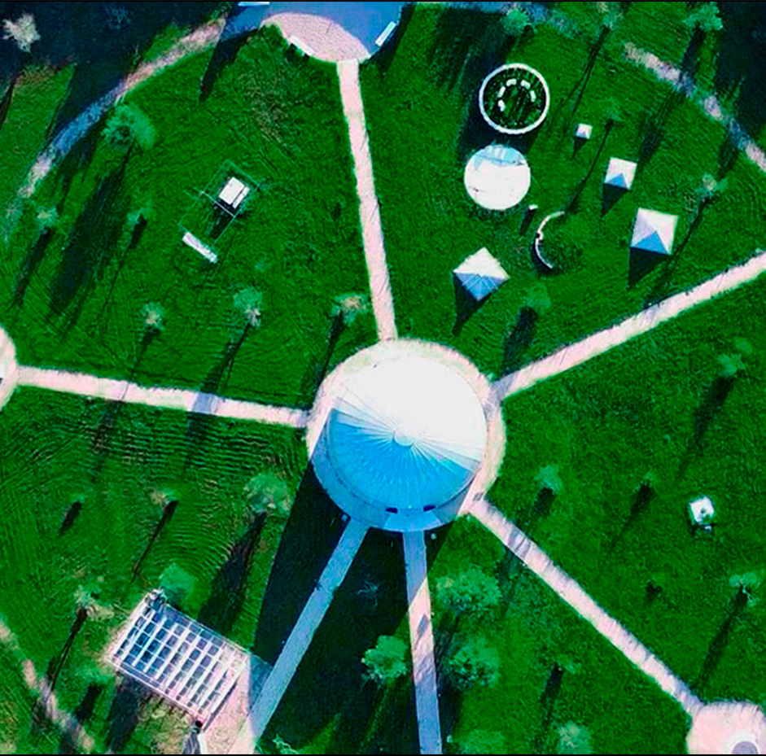
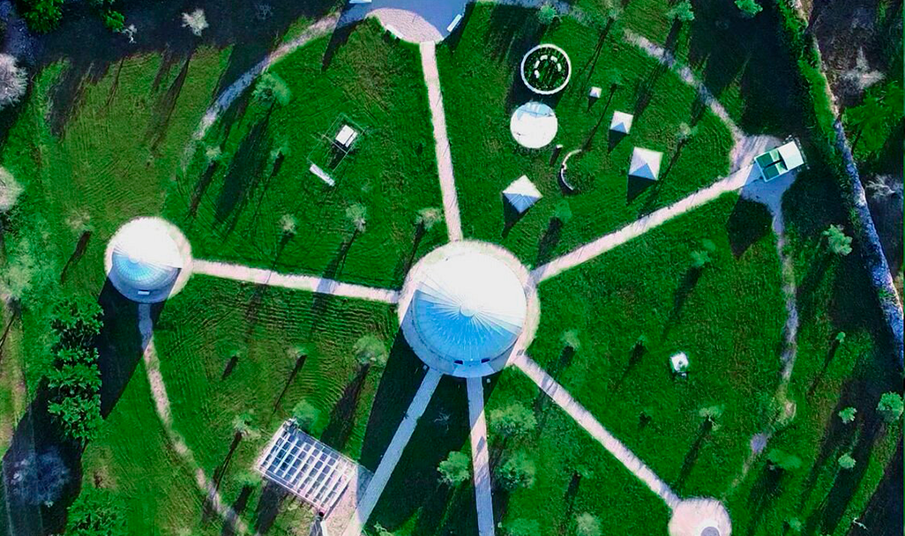
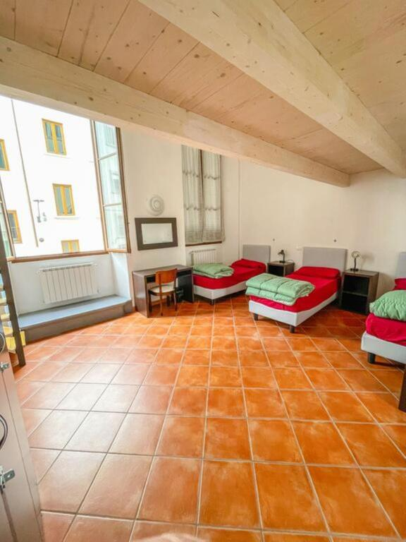
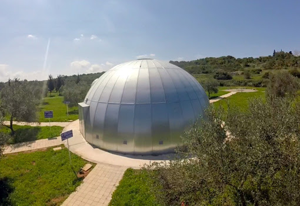

Experiencias bajo las estrellas
Observatorio san Lorenzo
Descripción
Un viaje científico y astronómico en la Comunidad Valenciana. Dos días y una noche.
En esta experiencia, el destino estará centrado en la observación del cielo y el aprendizaje de la
astronomía desde uno de los entornos astronómicos más importantes de Valencia. El viaje incluirá la
visita al Observatorio Astronómico de la Universitat de València y a las instalaciones de
observación situadas en Aras de los Olmos, una de las zonas con menor contaminación lumínica
de toda la Comunidad Valenciana.
Durante la experiencia se aprenderá cómo trabajan los astrónomos profesionales, cómo se utilizan los telescopios de investigación y cuáles son las principales técnicas de observación del universo. También se realizarán actividades prácticas relacionadas con constelaciones, planetas, estrellas y observación lunar.
Además, se explicará la historia del observatorio, considerado uno de los observatorios universitarios más antiguos de España. La experiencia también incluirá una visita nocturna a una playa luminiscente cercana, donde se aprenderá la relación entre la Luna y las mareas, así como el fenómeno natural de la bioluminiscencia, responsable del brillo azulado visible en el agua.
Estadía en :alojamiento rural en Aras de los Olmos, situado cerca de las zonas de observación astronómica y rodeado de naturaleza.
Precio del viaje : 180 € por persona. Incluye transporte en tren y autobús, una noche de alojamiento rural, desayuno, entrada al observatorio astronómico, actividades guiadas y observación nocturna con telescopios profesionales.
Dato destacado
Aras de los Olmos cuenta con certificación Starlight y está considerada una de las mejores zonas de observación astronómica de la Comunidad Valenciana gracias a su baja contaminación lumínica y elevada altitud.
Itinerario
Día 1 - Llegada a Aras de los Olmos y visita al observatorio
Instalación y descubrimiento astronómico · 14:00 - 19:00
La experiencia comienza con el viaje en tren y autobús hacia Aras de los Olmos, una de las zonas con menor contaminación lumínica de toda la Comunidad Valenciana. Tras la llegada, los viajeros se alojarán en un alojamiento rural rodeado de naturaleza y situado cerca de las principales áreas de observación astronómica.
Por la tarde se realizará la visita al Observatorio Astronómico de la Universitat de València, donde se descubrirá cómo trabajan los astrónomos profesionales y cómo se utilizan los telescopios de investigación. También se explicará la historia del observatorio, considerado uno de los observatorios universitarios más antiguos de España.

Día 1 - Tarde - Observación del cielo con telescopios profesionales
Sesión astronómica guiada · 20:00 - 22:00
La noche estará dedicada a la observación del cielo desde las instalaciones astronómicas de Aras de los Olmos, reconocidas por la calidad y oscuridad de sus cielos.
Guiados por especialistas, los viajeros podrán aprender a identificar constelaciones, estrellas, planetas y detalles de la Luna utilizando telescopios profesionales. Durante la actividad también se explicarán técnicas de observación astronómica y curiosidades sobre el universo en un entorno natural rodeado de montañas y bosques.

Día 1 - Noche - Lágrimas de San Lorenzo en la playa
Playa luminiscente · 22:30 - 00:00
Durante la noche se realizará una salida hacia la costa para contemplar las Lágrimas de San Lorenzo, uno de los fenómenos astronómicos más conocidos del verano. Desde una playa alejada de la contaminación lumínica, los viajeros podrán observar la lluvia de meteoros en un entorno natural iluminado únicamente por el cielo nocturno.
La actividad estará acompañada por explicaciones sobre el origen de las Perseidas, su relación con el cometa Swift-Tuttle y las mejores formas de identificar estrellas fugaces y constelaciones visibles durante la observación. Además, se explicará cómo influye la Luna en las mareas y por qué el agua puede adquirir un brillo luminiscente durante la noche debido a ciertos organismos marinos y a la reflexión de la luz lunar sobre el mar.

Día 2 -Naturaleza, astronomía y regreso
Sesión astronómica guiada · 9:00 - 11:00
La mañana comenzará con el desayuno en el alojamiento rural y tiempo libre para disfrutar del paisaje natural de Aras de los Olmos antes del regreso. Posteriormente se realizará una breve actividad final de repaso astronómico y el traslado de vuelta en autobús y tren, finalizando una experiencia científica y educativa centrada en la observación del universo.


Nota importante: Los programas descritos son susceptibles de cambios por razones puntuales ajenas a nuestra organización, tales como condiciones meteorológicas o de seguridad.
Observaciones
- Si alguien tiene alergia o intolerancia a algún tipo de alimento deberá comunicarlo a la agencia para prever incidentes inesperados que cundan el panico.
- Si alguien tiene algún tipo de enfermedad que afecte a la respiración, resistencia o movimiento, deberá comunicarlo a la agencia para prever una mayor seguridad y adaptación.
- Si traen menores de edad o acompañan a personas con necesidades especiales, manténganse pendientes de ellos y no se separen en ningún momento. Recuerden presentárselos a los guías e informarles de todo lo necesario que deban tener en cuenta.
- Cualquier siniestro sucedido durante el viaje o emergencia médica será responsabilidad económica de la propia persona afectada. Los costes correrán por cuenta del viajero. Se le acompañará o transportará a la zona de asistencia médica más cercana y, si es posible, el grupo continuará su recorrido.Si el viajero se recupera a tiempo para el regreso, será reincorporado al viaje. En caso de que no sea posible, deberá ponerse en contacto con sus familiares, amigos u otras personas de confianza para poder regresar a su hogar cuando esté recuperado.
Gastos de anulación según fecha de salida
| HASTA | IMPORTE |
|---|---|
| Más de dos meses de anticipación | 0% |
| Un mes de anticipación | 40% |
| Una semana de anticipación | 80% |
| El dia del viaje | 100% |
Conforme más se acerque a la fecha de salida el importe que se le quitara a su viaje sera mayor.
El precio incluye
- Alojamiento completo
- Guía especializado
- Billete de avión
- Excursiones nocturnas
El precio no incluye
- Transporte interno
- Comidas y cenas
- Seguro opcional
- Gastos personales
Preguntas frecuentes
Aprende mas sobre tu viaje, no te pierdas nada.
El espacio funciona principalmente como un parque astronómico y centro de observación científica, donde se realizan actividades educativas y observaciones reales del cielo. Además, también conserva información, instrumentos y registros relacionados con eventos astronómicos históricos, combinando funciones propias de un observatorio y de un espacio divulgativo similar a un museo.
Dependiendo de las condiciones del cielo, se podrán observar constelaciones, planetas, estrellas, cúmulos y detalles de la Luna mediante telescopios profesionales.
La zona posee uno de los cielos más oscuros y limpios de la Comunidad Valenciana, con muy poca contaminación lumínica, lo que la convierte en un lugar ideal para la investigación y observación astronómica.
Sí, especialmente durante la noche y en temporadas frías. Se recomienda llevar ropa de abrigo, calzado cómodo y varias capas para disfrutar mejor de la actividad.
Sí. Las observaciones astronómicas necesitan cielos despejados para realizarse correctamente. En caso de mal tiempo, se ofrecerán actividades alternativas relacionadas con astronomía y divulgación científica.
No. El viaje incluye el desayuno, pero la comida y la cena no están incluidas para que cada viajero pueda elegir libremente dónde comer durante la experiencia.